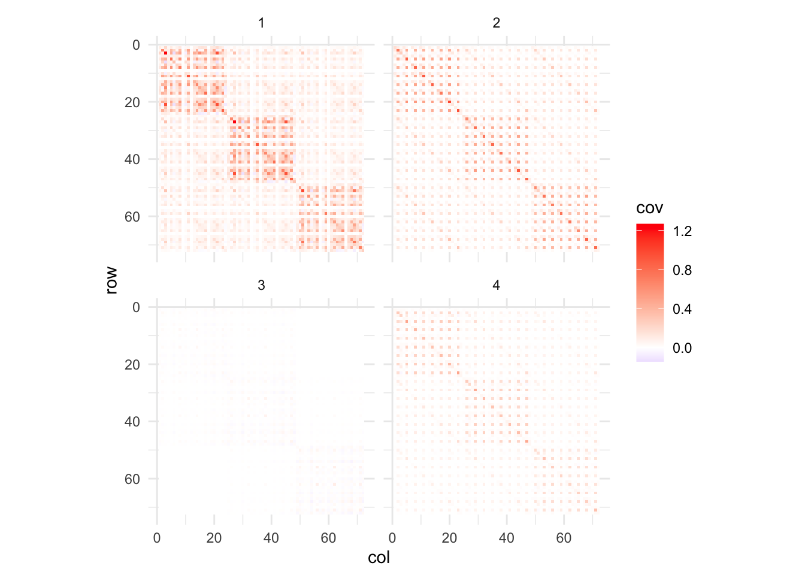
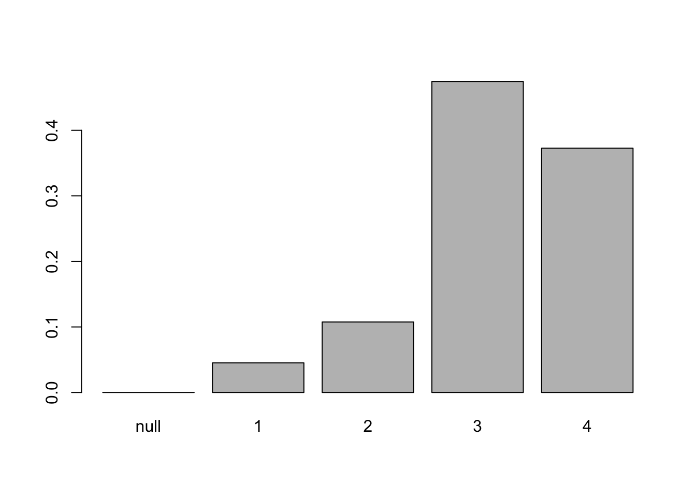
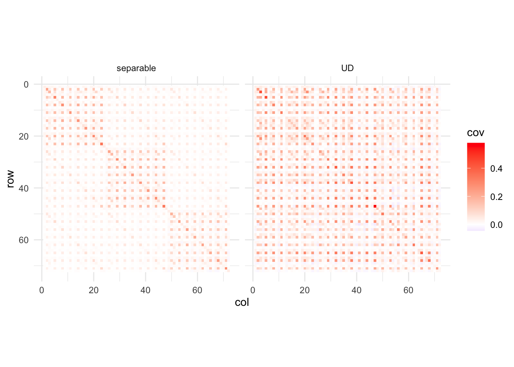
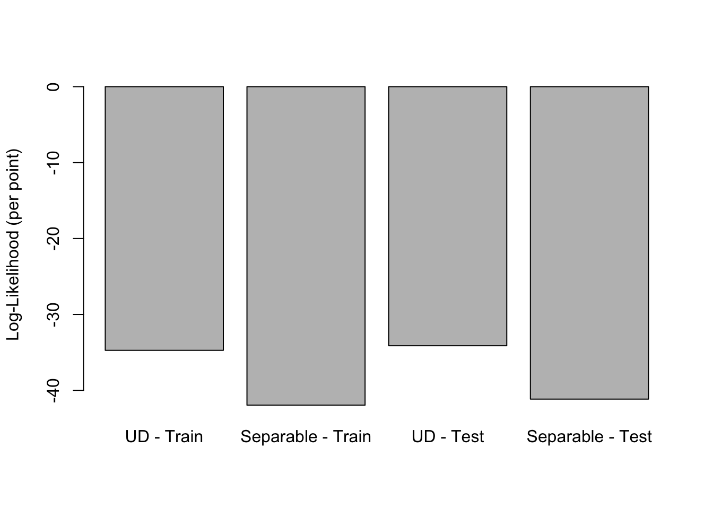

Last updated: 2025-02-07
Checks: 6 1
Knit directory: ashTray/
This reproducible R Markdown analysis was created with workflowr (version 1.7.1). The Checks tab describes the reproducibility checks that were applied when the results were created. The Past versions tab lists the development history.
The R Markdown file has unstaged changes. To know which version of
the R Markdown file created these results, you’ll want to first commit
it to the Git repo. If you’re still working on the analysis, you can
ignore this warning. When you’re finished, you can run
wflow_publish to commit the R Markdown file and build the
HTML.
Great job! The global environment was empty. Objects defined in the global environment can affect the analysis in your R Markdown file in unknown ways. For reproduciblity it’s best to always run the code in an empty environment.
The command set.seed(20250123) was run prior to running
the code in the R Markdown file. Setting a seed ensures that any results
that rely on randomness, e.g. subsampling or permutations, are
reproducible.
Great job! Recording the operating system, R version, and package versions is critical for reproducibility.
Nice! There were no cached chunks for this analysis, so you can be confident that you successfully produced the results during this run.
Great job! Using relative paths to the files within your workflowr project makes it easier to run your code on other machines.
Great! You are using Git for version control. Tracking code development and connecting the code version to the results is critical for reproducibility.
The results in this page were generated with repository version 88b163e. See the Past versions tab to see a history of the changes made to the R Markdown and HTML files.
Note that you need to be careful to ensure that all relevant files for
the analysis have been committed to Git prior to generating the results
(you can use wflow_publish or
wflow_git_commit). workflowr only checks the R Markdown
file, but you know if there are other scripts or data files that it
depends on. Below is the status of the Git repository when the results
were generated:
Ignored files:
Ignored: .Rhistory
Ignored: analysis/.Rhistory
Ignored: data/fitted_models/
Ignored: data/processed_data/
Ignored: data/raw_data/
Unstaged changes:
Modified: analysis/ed_em_cancer.Rmd
Note that any generated files, e.g. HTML, png, CSS, etc., are not included in this status report because it is ok for generated content to have uncommitted changes.
These are the previous versions of the repository in which changes were
made to the R Markdown (analysis/ed_em_cancer.Rmd) and HTML
(docs/ed_em_cancer.html) files. If you’ve configured a
remote Git repository (see ?wflow_git_remote), click on the
hyperlinks in the table below to view the files as they were in that
past version.
| File | Version | Author | Date | Message |
|---|---|---|---|---|
| Rmd | 0be3f0f | Eric Weine | 2025-02-06 | added analysis of cancer data |
| html | 0be3f0f | Eric Weine | 2025-02-06 | added analysis of cancer data |
Here, I was interested in trying out fitting a mixture of separable normal distributions to a real dataset, and comparing that to the UD model. Specifically, UD will be fitting the model:
\[\begin{align*} \textrm{vec}(\boldsymbol{Y}_{i}) &\sim \mathcal{N}_{pq} (\boldsymbol{\theta}_{i}, \boldsymbol{V}_{i}) \quad \textrm{independently for $i = 1, \dots, n$} \\ \boldsymbol{\theta}_{1}, \dots, \boldsymbol{\theta}_{n} &\overset{\text{iid}} {\sim} \pi_{0}\boldsymbol{\delta}_{0} + \sum\limits_{k = 1}^{K} \pi_{k} \mathcal{N}_{pq}(\boldsymbol{0}, \boldsymbol{\Sigma}_{k}), \end{align*}\]
which I will be comparing to the following separable mixture model:
\[\begin{align*} \textrm{vec}(\boldsymbol{Y}_{i}) &\sim \mathcal{N}_{pq} (\boldsymbol{\theta}_{i}, \boldsymbol{V}_{i}) \quad \textrm{independently for $i = 1, \dots, n$} \\ \boldsymbol{\theta}_{1}, \dots, \boldsymbol{\theta}_{n} &\overset{\text{iid}} {\sim} \pi_{0}\boldsymbol{\delta}_{0} + \sum\limits_{k = 1}^{K} \pi_{k} \mathcal{N}_{pq}(\boldsymbol{0}, \boldsymbol{R}_{k} \otimes \boldsymbol{C}_{k}), \end{align*}\]
where each matrix \(\boldsymbol{Y}_{i}\) is \(p \times q\), each \(\boldsymbol{R}_{k}\) is \(p \times p\), and each \(\boldsymbol{C}_{k}\) is \(q \times q\).
I will be fitting these models to a dataset of 3 different cancer drugs applied to 24 different cancer cell lines. For each cell line and each treatment, I computed differential expression summary statistics (vs. a control treatment) by treating each cell as an independent observation and fitting a quasiPoisson GLM.
library(dplyr)
library(Matrix)
Y_bor <- Matrix::readMM("data/raw_data/Bortezomib_24hr_expt1/matrix.mtx")
bcs_bor <- readr::read_csv("data/raw_data/Bortezomib_24hr_expt1/barcodes.tsv", col_names = c("bc"))
genes_bor <- readr::read_csv("data/raw_data/Bortezomib_24hr_expt1/genes.tsv", col_names = c("gene"))
colnames(Y_bor) <- bcs_bor$bc
rownames(Y_bor) <- genes_bor$gene
md_bor <- readr::read_csv("data/raw_data/Bortezomib_24hr_expt1/classifications.csv")
md_bor <- md_bor %>% dplyr::filter(
cell_quality == "normal"
)
Y_bor <- Y_bor[,md_bor$barcode]
md_bor$treatment <- "bortezomib"
Y_tra <- Matrix::readMM("data/raw_data/Trametinib_24hr_expt1/matrix.mtx")
bcs_tra <- readr::read_csv("data/raw_data/Trametinib_24hr_expt1/barcodes.tsv", col_names = c("bc"))
genes_tra <- readr::read_csv("data/raw_data/Trametinib_24hr_expt1/genes.tsv", col_names = c("gene"))
colnames(Y_tra) <- bcs_tra$bc
rownames(Y_tra) <- genes_tra$gene
md_tra <- readr::read_csv("data/raw_data/Trametinib_24hr_expt1/classifications.csv")
md_tra <- md_tra %>% dplyr::filter(
cell_quality == "normal"
)
Y_tra <- Y_tra[,md_tra$barcode]
md_tra$treatment <- "trametinib"
Y_ida <- Matrix::readMM("data/raw_data/Idasanutlin_24hr_expt1/matrix.mtx")
bcs_ida <- readr::read_csv("data/raw_data/Idasanutlin_24hr_expt1/barcodes.tsv", col_names = c("bc"))
genes_ida <- readr::read_csv("data/raw_data/Idasanutlin_24hr_expt1/genes.tsv", col_names = c("gene"))
colnames(Y_ida) <- bcs_ida$bc
rownames(Y_ida) <- genes_ida$gene
md_ida <- readr::read_csv("data/raw_data/Idasanutlin_24hr_expt1/classifications.csv")
md_ida <- md_ida %>% dplyr::filter(
cell_quality == "normal"
)
Y_ida <- Y_ida[,md_ida$barcode]
md_ida$treatment <- "idasanutlin"
Y_unt <- Matrix::readMM("data/raw_data/DMSO_24hr_expt1/matrix.mtx")
bcs_unt <- readr::read_csv("data/raw_data/DMSO_24hr_expt1/barcodes.tsv", col_names = c("bc"))
genes_unt <- readr::read_csv("data/raw_data/DMSO_24hr_expt1/genes.tsv", col_names = c("gene"))
colnames(Y_unt) <- bcs_unt$bc
rownames(Y_unt) <- genes_unt$gene
md_unt <- readr::read_csv("data/raw_data/DMSO_24hr_expt1/classifications.csv")
md_unt <- md_unt %>% dplyr::filter(
cell_quality == "normal"
)
Y_unt <- Y_unt[,md_unt$barcode]
md_unt$treatment <- "dmso"
Y <- cbind(
as.matrix(Y_unt), as.matrix(Y_tra), as.matrix(Y_bor), as.matrix(Y_ida)
)
Y <- as(Y, "CsparseMatrix")
Y <- Y[Matrix::rowSums(Y) > 0, ]
md <- rbind(md_unt, md_tra, md_bor, md_ida)
counts <- Matrix::t(Y)
rm(Y_bor, Y_ida, Y_tra, Y_unt, md_unt, md_tra, md_ida, md_bor, Y)
gc()
# require that each gene is expressed in at least 10 cells
genes_to_use <- which(Matrix::colSums(counts>0)>9)
counts <- counts[, genes_to_use]
counts <- counts[md$barcode, ]
conditions <- unique(md$treatment)
conditions <- conditions[conditions != "dmso"]
res_list <- list()
for (ct in unique(md$singlet_ID)) {
print(ct)
res_list[[ct]] <- list()
md_ct <- md %>% dplyr::filter(singlet_ID == ct)
counts_ct <- counts[md_ct$barcode, ]
md_control <- md_ct %>% dplyr::filter(treatment == "dmso")
counts_ct_control <- counts_ct[md_control$barcode, ]
md_control$treat <- 0
for (cond in conditions) {
print(cond)
md_ct_cond <- md_ct %>%
dplyr::filter(treatment == cond)
md_ct_cond$treat <- 1
counts_ct_cond <- counts_ct[md_ct_cond$barcode, ]
est_vec <- c()
se_vec <- c()
gene_vec <- c()
for (gene in colnames(counts_ct_cond)) {
try({
# Prepare data
md_ct_cond$expr <- counts_ct_cond[, gene]
md_control$expr <- counts_ct_control[, gene]
md_glm <- rbind(md_ct_cond, md_control)
# Fit model
de_mod <- glm(
expr ~ treat,
family = quasipoisson,
data = md_glm,
offset = log(tot_reads),
control = list(maxit = 100)
)
# If it succeeds, append results
est_vec <- c(est_vec, coef(summary(de_mod))["treat", "Estimate"])
se_vec <- c(se_vec, coef(summary(de_mod))["treat", "Std. Error"])
gene_vec <- c(gene_vec, gene)
}, silent = TRUE)
}
res_list[[ct]][[cond]] <- data.frame(
gene = gene_vec,
b = est_vec,
se = se_vec
)
}
}
# first, I think it would be interesting to run udr on these data
# and then see how separable the covariance matrices are
all_data <- do.call(
rbind,
lapply(names(res_list), function(ct) {
do.call(
rbind,
lapply(names(res_list[[ct]]), function(trt) {
df <- res_list[[ct]][[trt]]
# Add columns identifying celltype and treatment
df$celltype <- ct
df$treatment <- trt
df
})
)
})
)
all_df_b <- all_data %>%
tidyr::pivot_wider(
id_cols = gene, # row identifier
names_from = c(treatment, celltype), # pivot by these two columns
values_from = b, # values that fill the cells
names_sep = "_" # how to combine treatment and celltype in the new col names
)
b_mat <- as.matrix(all_df_b[,-1])
rownames(b_mat) <- all_df_b$gene
all_df_se <- all_data %>%
tidyr::pivot_wider(
id_cols = gene, # row identifier
names_from = c(treatment, celltype), # pivot by these two columns
values_from = se, # values that fill the cells
names_sep = "_" # how to combine treatment and celltype in the new col names
)
se_mat <- as.matrix(all_df_se[,-1])
rownames(se_mat) <- all_df_se$gene
library(udr)
save(
b_mat,
se_mat,
file="data/processed_data/cancer_sc_multicond.Rdata"
)Now, to actually fit the separable normal mixture model, I extended the extreme deconvolution algorithm to the case where all covariance matrices are constrained to be separable. I won’t give all the details here, but the E-step for this model is exactly the same as it is for the Ultimate Deconvolution model. However, the M-step is different. Specifically, the M-step involves maximizing the function
\[f(\boldsymbol{R}_{k}, \boldsymbol{C}_{k}) = -\frac{\sum_{i=1}^{n}\omega_{ik}}{2} \log|\boldsymbol{R}_{k} \otimes \boldsymbol{C}_{k}| - \frac{1}{2}\left(\sum_{i = 1}^{n} \omega_{ik}\left\{ \boldsymbol{\mu}_{i}^{T} (\boldsymbol{R}_{k} \otimes \boldsymbol{C}_{k})^{-1} \boldsymbol{\mu}_{i} + \textrm{Tr}\left(\boldsymbol{S}_{i}(\boldsymbol{R}_{k} \otimes \boldsymbol{C}_{k})^{-1}\right)\right\}\right)\]
for \(\boldsymbol{R}_{k}\) and \(\boldsymbol{C}_{k}\). This can be optimized by alternating the following steps:
\[\begin{aligned} \boldsymbol{R}_{k} &\;\leftarrow\; \frac{1}{Wq}\,\sum_{i=1}^n \omega_i\,\mathrm{Tr}_2\Bigl[(\boldsymbol{I}_p\otimes \boldsymbol{C}_{k}^{-1})\,\boldsymbol{T}_i\Bigr],\\[6pt] \boldsymbol{C}_{k} &\;\leftarrow\; \frac{1}{Wp}\,\sum_{i=1}^n \omega_i\,\mathrm{Tr}_1\Bigl[(\boldsymbol{R}_{k}^{-1}\otimes \boldsymbol{I}_q)\,\boldsymbol{T}_i\Bigr], \end{aligned}\]where \(W = \sum_{i = 1}^{n} \omega_{ik}\), \(\boldsymbol{T}_{i} = \boldsymbol{\mu}_{i}^{T} \boldsymbol{\mu}_{i} + \boldsymbol{S}_{i}\), and \(Tr_{1}\) and \(Tr_{2}\) are partial traces over blocks of size \(q\) and \(p\), respectively
// [[Rcpp::depends(RcppEigen)]]
// [[Rcpp::depends(RcppEigen, BH)]]
#include <RcppEigen.h>
#include <unsupported/Eigen/KroneckerProduct>
#include <vector>
#include <cmath>
using namespace Rcpp;
using Eigen::MatrixXd;
using Eigen::VectorXd;
using std::vector;
//==============================================================================
// Helper: Invert a symmetric positive–definite matrix using its Cholesky factorization
//------------------------------------------------------------------------------
MatrixXd spd_inv(const MatrixXd & A) {
// Use Eigen’s LLT (Cholesky) factorization:
Eigen::LLT<MatrixXd> lltOfA(A);
return lltOfA.solve(MatrixXd::Identity(A.rows(), A.cols()));
}
//==============================================================================
// Helper: Compute the log–likelihood for one multivariate normal observation
// loglik = -0.5 * ( y' Sigma^{-1} y ) - (sum(log(diag(chol(Sigma))))
// (note: in R your code computed half_logdet = sum(log(diag(L))) )
//------------------------------------------------------------------------------
// Version for a full dense matrix
double get_mvn_loglik_1point(const Eigen::VectorXd & y, const Eigen::MatrixXd & Sigma) {
Eigen::LLT<Eigen::MatrixXd> llt(Sigma);
Eigen::MatrixXd L = llt.matrixL(); // Cholesky factor: Sigma = L * L'
// Compute the half-log determinant: sum(log(diag(L)))
double half_logdet = L.diagonal().array().log().sum();
// Solve for Sigma^{-1} * y via the Cholesky factorization
Eigen::VectorXd sol = llt.solve(y);
double quad_form = y.dot(sol);
double loglik = -0.5 * quad_form - half_logdet;
return loglik;
}
// Version for a diagonal matrix
double get_mvn_loglik_1point_diag(const Eigen::VectorXd & y,
const Eigen::DiagonalMatrix<double, Eigen::Dynamic> Sigma) {
// For a diagonal matrix, the "Cholesky" is trivial: it's just the elementwise square root.
Eigen::VectorXd d = Sigma.diagonal();
Eigen::VectorXd L_diag = d.array().sqrt();
double half_logdet = L_diag.array().log().sum();
// The inverse of a diagonal matrix is the reciprocal of the diagonal entries.
Eigen::VectorXd sol = y.array() / d.array();
double quad_form = y.dot(sol);
double loglik = -0.5 * quad_form - half_logdet;
return loglik;
}
VectorXd get_mvn_loglik_per_pt(const MatrixXd & Y_T,
const MatrixXd & V_diag,
const MatrixXd & U) {
int n = Y_T.cols();
VectorXd loglik_vec(n);
for (int i = 0; i < n; i++) {
// Get observation y (as a column vector)
VectorXd y = Y_T.col(i);
// Sigma = U + V_list[i]
MatrixXd Sigma = U;
Sigma.diagonal() += V_diag.col(i);
loglik_vec(i) = get_mvn_loglik_1point(y, Sigma);
}
return loglik_vec;
}
VectorXd get_mvn_sep_loglik_per_pt(const MatrixXd & Y_T,
const MatrixXd & V_diag,
const MatrixXd & R,
const MatrixXd & C) {
MatrixXd U = Eigen::kroneckerProduct(R, C);
return get_mvn_loglik_per_pt(Y_T, V_diag, U);
}
//==============================================================================
// Helper: Compute log-likelihood per point under the "null" (nonseparable) model,
// i.e. using Sigma = V_list[i] only.
//------------------------------------------------------------------------------
VectorXd get_null_loglik_per_pt(const MatrixXd & Y_T,
const MatrixXd & V_diag) {
int n = Y_T.cols();
VectorXd loglik_vec(n);
for (int i = 0; i < n; i++) {
VectorXd y = Y_T.col(i);
loglik_vec(i) = get_mvn_loglik_1point_diag(y, V_diag.col(i).asDiagonal());
}
return loglik_vec;
}
//==============================================================================
// Helper: Compute responsibilities given mixture weights and components.
// R_list and C_list should be vectors (one per component) for the separable
// components; the last component (index K-1) is assumed to be the null.
//------------------------------------------------------------------------------
MatrixXd get_responsibilities(const MatrixXd & Y_T,
const MatrixXd & V_diag,
const vector<MatrixXd> & R_list,
const vector<MatrixXd> & C_list,
const VectorXd & Pi) {
int n = Y_T.cols();
int K = Pi.size();
MatrixXd omega = MatrixXd::Zero(n, K);
// For mixture components 0,...,K-2 (all but the null)
for (int k = 0; k < K - 1; k++) {
VectorXd loglik = get_mvn_sep_loglik_per_pt(Y_T, V_diag, R_list[k], C_list[k]);
// Multiply by Pi[k] and exponentiate
for (int i = 0; i < n; i++) {
omega(i, k) = Pi(k) * std::exp(loglik(i));
}
}
// For the null component (last one)
{
VectorXd loglik = get_null_loglik_per_pt(Y_T, V_diag);
for (int i = 0; i < n; i++) {
omega(i, K - 1) = Pi(K - 1) * std::exp(loglik(i));
}
}
// Normalize responsibilities so that each row sums to 1
for (int i = 0; i < n; i++) {
double rowSum = omega.row(i).sum();
if (rowSum > 0)
omega.row(i) /= rowSum;
}
return omega;
}
MatrixXd get_responsibilities_non_sep(const MatrixXd & Y_T,
const MatrixXd & V_diag,
const vector<MatrixXd> & U_list,
const VectorXd & Pi) {
int n = Y_T.cols();
int K = Pi.size();
MatrixXd omega = MatrixXd::Zero(n, K);
// For mixture components 0,...,K-2 (all but the null)
for (int k = 0; k < K - 1; k++) {
VectorXd loglik = get_mvn_loglik_per_pt(Y_T, V_diag, U_list[k]);
// Multiply by Pi[k] and exponentiate
for (int i = 0; i < n; i++) {
omega(i, k) = Pi(k) * std::exp(loglik(i));
}
}
// For the null component (last one)
{
VectorXd loglik = get_null_loglik_per_pt(Y_T, V_diag);
for (int i = 0; i < n; i++) {
omega(i, K - 1) = Pi(K - 1) * std::exp(loglik(i));
}
}
// Normalize responsibilities so that each row sums to 1
for (int i = 0; i < n; i++) {
double rowSum = omega.row(i).sum();
if (rowSum > 0)
omega.row(i) /= rowSum;
}
return omega;
}
//==============================================================================
// Helper: Update mixture weights Pi by taking column means of responsibilities.
//------------------------------------------------------------------------------
VectorXd update_Pi(const MatrixXd & omega) {
// Each column's mean is the new Pi component.
return omega.colwise().mean();
}
//==============================================================================
// Helper: Compute the posterior moment matrix given U, V, and an observation y.
// Implements:
// mat_prod = U * spd_inv(U + V)
// m = mat_prod * y
// S = U - mat_prod * U
// Tj = m m' + S
//------------------------------------------------------------------------------
MatrixXd get_post_moment(
const MatrixXd & U, const Eigen::DiagonalMatrix<double, Eigen::Dynamic> V, const VectorXd & y
) {
MatrixXd UplusV = U;
UplusV.diagonal() += V.diagonal();
MatrixXd invUplusV = spd_inv(UplusV);
MatrixXd mat_prod = U * invUplusV;
VectorXd m = mat_prod * y;
MatrixXd S = U - mat_prod * U;
MatrixXd Tj = m * m.transpose() + S;
return Tj;
}
MatrixXd get_post_mean(
const MatrixXd & U, const Eigen::DiagonalMatrix<double, Eigen::Dynamic> V, const VectorXd & y
) {
MatrixXd UplusV = U;
UplusV.diagonal() += V.diagonal();
MatrixXd invUplusV = spd_inv(UplusV);
MatrixXd mat_prod = U * invUplusV;
VectorXd m = mat_prod * y;
return m;
}
//==============================================================================
// Helper: partial_trace_1
// Interprets M as a (p*q) x (p*q) matrix arranged in p blocks of rows (each of size q)
// and computes the q x q matrix whose (k,l)-th entry is the sum over a = 0,...,p-1 of
// M( a*q + k, a*q + l ).
//------------------------------------------------------------------------------
MatrixXd partial_trace_1(const MatrixXd & M, int p, int q) {
MatrixXd out = MatrixXd::Zero(q, q);
for (int k = 0; k < q; k++) {
for (int l = 0; l < q; l++) {
double s = 0.0;
for (int a = 0; a < p; a++) {
int row_idx = a * q + k;
int col_idx = a * q + l;
s += M(row_idx, col_idx);
}
out(k, l) = s;
}
}
return out;
}
//==============================================================================
// Helper: partial_trace_2
// Interprets M as a (p*q) x (p*q) matrix arranged in p blocks of columns (each of size q)
// and computes the p x p matrix whose (a,b)-th entry is the trace of the (a,b)-th q x q block:
// out(a,b) = sum_{k=0}^{q-1} M(a*q+k, b*q+k)
//------------------------------------------------------------------------------
MatrixXd partial_trace_2(const MatrixXd & M, int p, int q) {
MatrixXd out = MatrixXd::Zero(p, p);
for (int a = 0; a < p; a++) {
for (int b = 0; b < p; b++) {
double s = 0.0;
for (int k = 0; k < q; k++) {
int row_idx = a * q + k;
int col_idx = b * q + k;
s += M(row_idx, col_idx);
}
out(a, b) = s;
}
}
return out;
}
//==============================================================================
// A simple struct for returning R and C from the alternating optimization
//------------------------------------------------------------------------------
struct RC {
MatrixXd R;
MatrixXd C;
};
//==============================================================================
// Helper: opt_RC_given_T_omega
// Given a vector of matrices T_list (one per data point), initial estimates R and C,
// and a vector omega (responsibilities for these data points), perform n_iter alternating
// updates. (This is the weighted flip-flop update.)
//------------------------------------------------------------------------------
RC opt_RC_given_T_omega(const vector<MatrixXd> & T_list,
MatrixXd R, MatrixXd C,
const VectorXd & omega,
int n_iter = 5) {
int n = T_list.size();
int p = R.rows();
int q = C.rows();
double W = omega.sum();
// Precompute identity matrices
MatrixXd I_p = MatrixXd::Identity(p, p);
MatrixXd I_q = MatrixXd::Identity(q, q);
for (int iter = 0; iter < n_iter; iter++) {
// --- Update R given C ---
MatrixXd R_sum = MatrixXd::Zero(p, p);
MatrixXd C_inv = spd_inv(C);
// Form A_mat = I_p kron C_inv (size: (p*q) x (p*q))
MatrixXd A_mat = Eigen::kroneckerProduct(I_p, C_inv);
for (int i = 0; i < n; i++) {
MatrixXd temp_R = A_mat * T_list[i];
R_sum += omega(i) * partial_trace_2(temp_R, p, q);
}
R = R_sum / (q * W);
// --- Update C given R ---
MatrixXd C_sum = MatrixXd::Zero(q, q);
MatrixXd R_inv = spd_inv(R);
// Form B_mat = R_inv kron I_q
MatrixXd B_mat = Eigen::kroneckerProduct(R_inv, I_q);
for (int i = 0; i < n; i++) {
MatrixXd temp_C = B_mat * T_list[i];
C_sum += omega(i) * partial_trace_1(temp_C, p, q);
}
C = C_sum / (p * W);
}
RC out;
out.R = R;
out.C = C;
return out;
}
//==============================================================================
// Helper: get_T_list
// Given data Y (n x d), a vector of matrices V_list (one per data point),
// and a matrix U, return a vector T_list (of length n) where each T_list[i]
// is computed via get_post_moment(U, V_list[i], y[i]).
//------------------------------------------------------------------------------
vector<MatrixXd> get_T_list(const MatrixXd & Y_T,
const MatrixXd & V_diag,
const MatrixXd & U) {
int n = Y_T.cols();
vector<MatrixXd> T_list;
T_list.reserve(n);
for (int i = 0; i < n; i++) {
VectorXd y = Y_T.col(i);
T_list.push_back(get_post_moment(U, V_diag.col(i).asDiagonal(), y));
}
return T_list;
}
//==============================================================================
// Helper: loglik_em
// Compute the overall log–likelihood for the EM algorithm given data Y,
// a vector V_list, and for each mixture component (separable components are given
// by corresponding R_list and C_list) and the mixture weights Pi.
//------------------------------------------------------------------------------
// [[Rcpp::export]]
double loglik_em(const MatrixXd & Y_T,
const MatrixXd & V_diag,
const vector<MatrixXd> & R_list,
const vector<MatrixXd> & C_list,
const VectorXd & Pi) {
int n = Y_T.cols();
int K = Pi.size();
MatrixXd lik_mat = MatrixXd::Zero(n, K);
// For components 0,...,K-2 (separable components)
for (int k = 0; k < K - 1; k++) {
VectorXd loglik = get_mvn_sep_loglik_per_pt(Y_T, V_diag, R_list[k], C_list[k]);
for (int i = 0; i < n; i++) {
lik_mat(i, k) = Pi(k) * std::exp(loglik(i));
}
}
// For the null component (last one)
{
VectorXd loglik = get_null_loglik_per_pt(Y_T, V_diag);
for (int i = 0; i < n; i++) {
lik_mat(i, K - 1) = Pi(K - 1) * std::exp(loglik(i));
}
}
// Sum over rows and then take log and sum over observations
double ll = 0.0;
for (int i = 0; i < n; i++) {
double rowSum = lik_mat.row(i).sum();
if (rowSum > 0)
ll += std::log(rowSum);
}
return ll;
}
// [[Rcpp::export]]
double loglik_em_non_sep(const MatrixXd & Y_T,
const MatrixXd & V_diag,
const vector<MatrixXd> & U_list,
const VectorXd & Pi) {
int n = Y_T.cols();
int K = Pi.size();
MatrixXd lik_mat = MatrixXd::Zero(n, K);
// For components 0,...,K-2 (separable components)
for (int k = 0; k < K - 1; k++) {
VectorXd loglik = get_mvn_loglik_per_pt(Y_T, V_diag, U_list[k]);
for (int i = 0; i < n; i++) {
lik_mat(i, k) = Pi(k) * std::exp(loglik(i));
}
}
// For the null component (last one)
{
VectorXd loglik = get_null_loglik_per_pt(Y_T, V_diag);
for (int i = 0; i < n; i++) {
lik_mat(i, K - 1) = Pi(K - 1) * std::exp(loglik(i));
}
}
// Sum over rows and then take log and sum over observations
double ll = 0.0;
for (int i = 0; i < n; i++) {
double rowSum = lik_mat.row(i).sum();
if (rowSum > 0)
ll += std::log(rowSum);
}
return ll;
}
// [[Rcpp::export]]
MatrixXd get_mixture_post_mean(const MatrixXd & Y_T,
const MatrixXd & V_diag,
const vector<MatrixXd> & R_list,
const vector<MatrixXd> & C_list,
const VectorXd & Pi) {
int n = Y_T.cols();
int K = Pi.size();
MatrixXd mean_mat(Y_T.rows(), Y_T.cols());
mean_mat.setZero();
MatrixXd responsibilities = get_responsibilities(Y_T,
V_diag,
R_list,
C_list,
Pi);
for (int k = 0; k < K - 1; k++){
MatrixXd U = Eigen::kroneckerProduct(R_list[k], C_list[k]);
for (int i = 0; i < Y_T.cols(); i++){
mean_mat.col(i) += responsibilities(i, k) * get_post_mean(
U,
V_diag.col(i).asDiagonal(),
Y_T.col(i)
);
}
}
return mean_mat;
}
// [[Rcpp::export]]
MatrixXd get_mixture_post_mean_non_sep(const MatrixXd & Y_T,
const MatrixXd & V_diag,
const vector<MatrixXd> & U_list,
const VectorXd & Pi) {
int n = Y_T.cols();
int K = Pi.size();
MatrixXd mean_mat(Y_T.rows(), Y_T.cols());
mean_mat.setZero();
MatrixXd responsibilities = get_responsibilities_non_sep(Y_T,
V_diag,
U_list,
Pi);
for (int k = 0; k < K - 1; k++){
MatrixXd U = U_list[k];
for (int i = 0; i < Y_T.cols(); i++){
mean_mat.col(i) += responsibilities(i, k) * get_post_mean(
U,
V_diag.col(i).asDiagonal(),
Y_T.col(i)
);
}
}
return mean_mat;
}
//==============================================================================
// Final exported function: optim_em_ed
//
// This function implements the full EM algorithm. The inputs are:
// - Y: an n x d matrix of observations (each row is an observation)
// - V_list: a list (vector) of matrices (each n x n) corresponding to V for each point
// - p: desired dimension of R (R is p x p)
// - q: desired dimension of C (C is q x q)
// - K: number of mixture components (the last one is assumed to be the null component)
// - maxiter: maximum number of EM iterations
//
// The function returns a list with the final mixture weights (Pi),
// a vector of R matrices (R_list), a vector of C matrices (C_list),
// and a vector of log-likelihood values (loglik).
//------------------------------------------------------------------------------
// [[Rcpp::export]]
Rcpp::List optim_em_ed_cpp(const Eigen::MatrixXd & Y_T,
const Eigen::MatrixXd & V_diag,
int p, int q, int K,
int maxiter = 100) {
int n = Y_T.cols();
// Initialize mixture weights Pi randomly and normalize
VectorXd Pi = VectorXd::Random(K).array().abs(); // abs to ensure nonnegative
Pi /= Pi.sum();
// Initialize R_list and C_list as vectors of matrices.
// For components 0,...,K-2 (the separable ones) we initialize diagonal matrices.
vector<MatrixXd> R_list;
vector<MatrixXd> C_list;
R_list.reserve(K - 1);
C_list.reserve(K - 1);
for (int k = 0; k < K - 1; k++) {
// Create a p x p diagonal matrix with random entries in [0.25,2]
VectorXd diagR = 0.25 + (2 - 0.25) * VectorXd::Random(p).array().abs();
MatrixXd R_init = diagR.asDiagonal();
R_list.push_back(R_init);
VectorXd diagC = 0.25 + (2 - 0.25) * VectorXd::Random(q).array().abs();
MatrixXd C_init = diagC.asDiagonal();
C_list.push_back(C_init);
}
// Store log-likelihood values here
vector<double> loglik_vec;
double loglik = loglik_em(Y_T, V_diag, R_list, C_list, Pi);
loglik_vec.push_back(loglik);
// EM iterations
for (int iter = 0; iter < maxiter; iter++) {
Rcpp::Rcout << "Iteration " << iter + 1 << ": loglik = " << loglik << std::endl;
// E-step: compute responsibilities (n x K matrix)
MatrixXd omega = get_responsibilities(Y_T, V_diag, R_list, C_list, Pi);
// M-step: update Pi from responsibilities
Pi = update_Pi(omega);
// For each separable component, update R and C by solving the weighted problem.
for (int k = 0; k < K - 1; k++) {
// For the kth component, form U = kronecker(R, C)
MatrixXd U = Eigen::kroneckerProduct(R_list[k], C_list[k]);
// Get T_list for this component.
vector<MatrixXd> T_list = get_T_list(Y_T, V_diag, U);
// Update R and C using the weighted flip-flop update.
RC opt_RC = opt_RC_given_T_omega(
T_list, R_list[k], C_list[k], omega.col(k), 5
);
R_list[k] = opt_RC.R;
C_list[k] = opt_RC.C;
}
// Update overall log–likelihood
loglik = loglik_em(Y_T, V_diag, R_list, C_list, Pi);
loglik_vec.push_back(loglik);
}
// Prepare return values.
// We return:
// Pi: the final mixture weights,
// R_list: a list (Rcpp::List) of R matrices,
// C_list: a list (Rcpp::List) of C matrices,
// loglik: a NumericVector of log-likelihood values.
Rcpp::List R_list_Rcpp(R_list.size());
Rcpp::List C_list_Rcpp(C_list.size());
for (unsigned int k = 0; k < R_list.size(); k++) {
R_list_Rcpp[k] = Rcpp::wrap(R_list[k]);
C_list_Rcpp[k] = Rcpp::wrap(C_list[k]);
}
Rcpp::NumericVector loglik_out(loglik_vec.size());
for (unsigned int i = 0; i < loglik_vec.size(); i++) {
loglik_out[i] = loglik_vec[i];
}
return Rcpp::List::create(Rcpp::Named("Pi") = Pi,
Rcpp::Named("R_list") = R_list_Rcpp,
Rcpp::Named("C_list") = C_list_Rcpp,
Rcpp::Named("loglik") = loglik_out);
}
spd_inv <- function(A) {
chol2inv(chol(A))
}
get_mvn_loglik_1point <- function(y, Sigma) {
chol_Sigma <- chol(Sigma)
Sigma_inv <- chol2inv(chol_Sigma)
half_logdet_Sigma <- sum(log(diag(chol_Sigma)))
quad_form <- as.vector(crossprod(y, Sigma_inv %*% y))
loglik <- -0.5 * quad_form - half_logdet_Sigma
return(loglik)
}
get_mvn_sep_loglik_per_pt <- function(Y, V_list, R, C) {
n <- nrow(Y)
loglik_vec <- numeric(n)
U <- kronecker(R, C)
for (i in seq_len(n)) {
loglik_vec[i] <- get_mvn_loglik_1point(Y[i, ], U + V_list[[i]])
}
return(loglik_vec)
}
# Note that in the typical case where each V is diagonal, these calculations
# can be greatly simplified because inverting each V is trivial
get_null_loglik_per_pt <- function(Y, V_list) {
n <- nrow(Y)
loglik_vec <- numeric(n)
for (i in seq_len(n)) {
loglik_vec[i] <- get_mvn_loglik_1point(Y[i, ], V_list[[i]])
}
return(loglik_vec)
}
# get responsibilities given mixture weights and components
# by default, make the last mixture weight correspond to the null
get_responsibilities <- function(Y, V_list, R_list, C_list, Pi) {
K <- length(Pi)
omega <- matrix(
data = 0,
nrow = nrow(Y),
ncol = K
)
for (k in 1:(K - 1)) {
omega[, k] <- Pi[k] * exp(
get_mvn_sep_loglik_per_pt(Y, V_list, R_list[[k]], C_list[[k]])
)
}
omega[, K] <- Pi[K] * exp(get_null_loglik_per_pt(Y, V_list))
omega <- omega / rowSums(omega)
return(omega)
}
# input vector of responsibilties
update_Pi <- function(omega) {
return(
colMeans(omega)
)
}
get_post_moment <- function(U, V, y) {
# in general if U is a kronecker product I think that these matrix
# multiplications could probably be done a bit faster
mat_prod <- U %*% spd_inv(U + V)
m <- mat_prod %*% y
S <- U - mat_prod %*% U
Tj <- tcrossprod(m) + S
return(Tj)
}
#--------------------------------------------------------------------
# Helper: partial_trace_1(M, p, q)
# Similarly, interprets M as a (p*q) x (p*q) block matrix and takes
# the partial trace over the "first" dimension (p). The result is
# a q x q matrix.
#
# The (k,l)-th entry is sum_{a=1..p} of M[ (a-1)*q + k, (a-1)*q + l].
#--------------------------------------------------------------------
partial_trace_1 <- function(M, p, q) {
out <- matrix(0, q, q)
for (k in seq_len(q)) {
for (l in seq_len(q)) {
s <- 0
for (a in seq_len(p)) {
row_idx <- (a - 1) * q + k
col_idx <- (a - 1) * q + l
s <- s + M[row_idx, col_idx]
}
out[k, l] <- s
}
}
out
}
#--------------------------------------------------------------------
# Helper: partial_trace_2(M, p, q)
# Interprets M as a (p*q) x (p*q) block matrix with p x p blocks,
# each block is q x q. This function returns a p x p matrix whose
# (a,b)-th entry is the trace of the (a,b) block of M (i.e. sum of
# diagonal elements in that q x q block).
#--------------------------------------------------------------------
partial_trace_2 <- function(M, p, q) {
out <- matrix(0, p, p)
for (a in seq_len(p)) {
for (b in seq_len(p)) {
# Diagonal elements within the (a,b)-th block
# Block row indices: (a-1)*q + 1 : a*q
# Block col indices: (b-1)*q + 1 : b*q
# We sum M[ row_k, col_k ] for k in 1..q
s <- 0
for (k in seq_len(q)) {
row_idx <- (a - 1) * q + k
col_idx <- (b - 1) * q + k
s <- s + M[row_idx, col_idx]
}
out[a, b] <- s
}
}
out
}
# here, omega stores the responsibilities
opt_RC_given_T_omega <- function(T_list, R, C, omega, n_iter = 5) {
#--------------------------------------------------------------------
# Main loop: alternate updating R and C
#--------------------------------------------------------------------
n <- length(T_list) # number of T_i's
p <- nrow(R) # dimension of R (R is p x p)
q <- nrow(C) # dimension of C (C is q x q)
# Precompute the identity matrices (they are used for the Kronecker products)
I_p <- diag(p)
I_q <- diag(q)
W <- sum(omega)
for (iter in seq_len(n_iter)) {
# --- Update R given C ---
R_sum <- matrix(0, p, p)
C_inv <- spd_inv(C) # assume C is invertible
# Form the matrix I_p \otimes C_inv which is (p*q) x (p*q)
A_mat <- kronecker(I_p, C_inv)
for (i in seq_len(n)) {
# Compute (I_p \otimes C_inv) %*% T_i.
# This multiplies every q x q block of T_i on the left by C_inv.
temp_R <- A_mat %*% T_list[[i]]
# Then take the partial trace over the second dimension
R_sum <- R_sum + omega[i] * partial_trace_2(temp_R, p, q)
}
R <- R_sum / (q * W)
# --- Update C given R ---
C_sum <- matrix(0, q, q)
R_inv <- spd_inv(R) # assume R is invertible
# Form the matrix R_inv \otimes I_q which is (p*q) x (p*q)
B_mat <- kronecker(R_inv, I_q)
for (i in seq_len(n)) {
# Compute (R_inv \otimes I_q) %*% T_i.
# This multiplies every block of T_i (arranged in p blocks of rows)
# on the left by R_inv.
temp_C <- B_mat %*% T_list[[i]]
# Then take the partial trace over the first dimension
C_sum <- C_sum + omega[i] * partial_trace_1(temp_C, p, q)
}
C <- C_sum / (p * W)
}
# Return the final estimates of R and C
list(R = R, C = C)
}
get_T_list <- function(Y, V_list, U) {
T_list <- list()
for (i in seq_len(n)) {
T_list[[i]] <- get_post_moment(U, V_list[[i]], Y[i, ])
}
return(T_list)
}
loglik_em <- function(Y, V_list, R_list, C_list, Pi) {
K <- length(Pi)
lik_mat <- matrix(
data = 0,
nrow = nrow(Y),
ncol = K
)
for (k in 1:(K - 1)) {
lik_mat[, k] <- Pi[k] * exp(
get_mvn_sep_loglik_per_pt(Y, V_list, R_list[[k]], C_list[[k]])
)
}
lik_mat[, K] <- Pi[K] * exp(get_null_loglik_per_pt(Y, V_list))
ll <- sum(log(rowSums(lik_mat)))
return(ll)
}
optim_em_ed <- function(
Y, V_list, p, q, K, maxiter = 100
) {
# initialize parameters
Pi <- runif(K)
Pi <- Pi / sum(Pi)
R_list <- list()
C_list <- list()
for (k in 1:(K - 1)) {
R_list[[k]] <- diag(runif(p, min = 0.25, max = 2))
C_list[[k]] <- diag(runif(q, min = 0.25, max = 2))
}
loglik_vec <- c()
loglik <- loglik_em(Y, V_list, R_list, C_list, Pi)
loglik_vec <- c(loglik_vec, loglik)
for (i in 1:maxiter) {
print(glue::glue("Iteration {i}: loglik = {loglik}"))
responsibilities <- get_responsibilities(Y, V_list, R_list, C_list, Pi)
Pi <- update_Pi(responsibilities)
# find closest separable covariance matrix for each mixture component
for (k in 1:(K - 1)) {
T_list <- get_T_list(Y, V_list, kronecker(R_list[[k]], C_list[[k]]))
opt_RC <- opt_RC_given_T_omega(
T_list,
R_list[[k]],
C_list[[k]],
responsibilities[, k]
)
R_list[[k]] <- opt_RC$R
C_list[[k]] <- opt_RC$C
}
loglik <- loglik_em(Y, V_list, R_list, C_list, Pi)
loglik_vec <- c(loglik_vec, loglik)
}
return(
list(
Pi = Pi,
R_list = R_list,
C_list = C_list,
loglik = loglik_vec
)
)
}
generate_point_normal_sim <- function(n, p, q, s = 0.5) {
n_zero <- rbinom(1, n, s)
n_nz <- n - n_zero
R <- matrixsampling::rwishart(n = 1, nu = 1, Sigma = diag(p))[,,1]
C <- matrixsampling::rwishart(n = 1, nu = 1, Sigma = diag(q))[,,1]
U <- kronecker(R, C)
Y_nz <- matrix(data = 0, nrow = n_nz, ncol = p*q)
V_list <- list()
for (i in seq_len(n_nz)) {
obs_var <- diag(runif(p*q, min = 0.5, max = 2))
V_list[[i]] <- obs_var
Y_nz[i, ] <- MASS::mvrnorm(
n = 1, mu = rep(0, p * q), Sigma = U + obs_var
)
}
Y_zero <- matrix(data = 0, nrow = n_zero, ncol = p*q)
V_idx <- n_nz + 1
for (i in seq_len(n_zero)) {
obs_var <- diag(runif(p*q, min = 0.5, max = 2))
V_list[[V_idx]] <- obs_var
Y_zero[i, ] <- MASS::mvrnorm(
n = 1, mu = rep(0, p * q), Sigma = obs_var
)
V_idx <- V_idx + 1
}
Y <- rbind(Y_zero, Y_nz)
return(
list(
Y = Y,
V_list = V_list,
pct_0 = n_zero / n,
U = U
)
)
}load("data/processed_data/cancer_sc_multicond.Rdata")Now, I sampled the summary statistics from above into a training and test set (where I took a 2/3 1/3 split).
set.seed(1)
# sample data
samp_idx <- sample.int(nrow(b_mat), size = as.integer((2/3) * nrow(b_mat)))
b_samp <- b_mat[samp_idx, ]
se_samp <- se_mat[samp_idx, ]I fit the separable model above with \(4\) non-null mixture components for 100 iterations (as has been noted previously, the convergence of extreme deconvolution can be quite slow, so this algorithm did not converge).
em_out <- optim_em_ed_cpp(
Y = t(b_samp),
V_diag = t(se_samp),
p = 3,
q = 24,
K = 5,
maxiter = 100
)
readr::write_rds(em_out, "data/fitted_models/cancer_sep_em_out.rds")em_out <- readr::read_rds("data/fitted_models/cancer_sep_em_out.rds")test_idx <- setdiff(seq_len(nrow(b_mat)), samp_idx)
b_test <- b_mat[test_idx, ]
se_test <- se_mat[test_idx, ]
train_ll_sep <- loglik_em(
Y_T = t(b_samp),
R_list = em_out$R_list,
C_list = em_out$C_list,
V_diag = t(se_samp),
Pi = em_out$Pi
)
test_ll_sep <- loglik_em(
Y_T = t(b_test),
R_list = em_out$R_list,
C_list = em_out$C_list,
V_diag = t(se_test),
Pi = em_out$Pi
)pm <- t(get_mixture_post_mean(
Y_T = t(b_samp), R_list = em_out$R_list, C_list = em_out$C_list, V_diag = t(se_samp), Pi = em_out$Pi
))marginal_cov1 <- em_out$Pi[1] * kronecker(em_out$R_list[[1]], em_out$C_list[[1]]) +
em_out$Pi[2] * kronecker(em_out$R_list[[2]], em_out$C_list[[2]]) +
em_out$Pi[3] * kronecker(em_out$R_list[[3]], em_out$C_list[[3]]) +
em_out$Pi[4] * kronecker(em_out$R_list[[4]], em_out$C_list[[4]])Below are the four mixture components fit by the model:
cov_df_list <- list()
for (k in 1:4) {
cov_df <- expand.grid(1:72, 1:72)
colnames(cov_df) <- c("row", "col")
cov_df$cov <- as.vector(
kronecker(em_out$R_list[[k]], em_out$C_list[[k]])
)
cov_df$component <- k
cov_df_list[[k]] <- cov_df
}
cov_all_df <- do.call(rbind, cov_df_list)
cov_all_df$component <- as.factor(cov_all_df$component)
library(ggplot2)
ggplot(cov_all_df, aes(x = col, y = row, fill = cov)) +
geom_tile() +
# Optional: adjust the color scale
scale_fill_gradient2(
low = "blue",
mid = "white",
high = "red",
midpoint = 0
) +
theme_minimal() +
coord_fixed() +
scale_y_reverse() +
facet_wrap(~component)
| Version | Author | Date |
|---|---|---|
| 0be3f0f | Eric Weine | 2025-02-06 |
These components have the following mixture weights:
pi <- em_out$Pi
pi <- c(pi[5], pi)[1:5]
names(pi) <- c("null", "1", "2", "3", "4")
barplot(pi)
| Version | Author | Date |
|---|---|---|
| 0be3f0f | Eric Weine | 2025-02-06 |
Marginalizing over the mixture weights results in the following covariance matrix:
mcov_df1 <- expand.grid(1:72, 1:72)
colnames(mcov_df1) <- c("row", "col")
mcov_df1$cov <- as.vector(marginal_cov1)
library(ggplot2)
ggplot(mcov_df1, aes(x = col, y = row, fill = cov)) +
geom_tile() +
# Optional: adjust the color scale
scale_fill_gradient2(
low = "blue",
mid = "white",
high = "red",
midpoint = 0
) +
theme_minimal() +
coord_fixed() +
scale_y_reverse()
| Version | Author | Date |
|---|---|---|
| 0be3f0f | Eric Weine | 2025-02-06 |
I then fit udr with \(4\) unconstrained mixture components, applying a nuclear norm penalty with \(\lambda = 3 * 24\).
library(udr)
fit0 <- udr::ud_init(
dat = b_samp,
V = lapply(seq_len(nrow(se_samp)), function(i) diag(se_samp[i, ]^2)),
n_unconstrained = 4,
U_scaled = matrix(data = 0, nrow = 72, ncol = 72)
)
fit <- ud_fit(fit0, control = list(maxiter = 100, unconstrained.update = "ed", lambda = 72, penalty.type = "nu"))
fit_out <- list()
fit_out$U <- fit$U
fit_out$Pi <- fit$w
readr::write_rds(fit_out, "data/fitted_models/cancer_ud_fit.rds")cov_udr <- readr::read_rds("data/fitted_models/cancer_ud_fit.rds")
U_list_udr <- list()
for (k in 1:4) {
U_list_udr[[k]] <- cov_udr$U[[glue::glue("unconstrained{k}")]]$mat
}
pi_udr <- c(tail(cov_udr$Pi, 4), cov_udr$Pi[1])
pm_udr <- get_mixture_post_mean_non_sep(
Y_T = t(b_samp),
V_diag = t(se_samp),
U_list = U_list_udr,
Pi = pi_udr
)train_ll_udr <- loglik_em_non_sep(
Y_T = t(b_samp),
U_list = U_list_udr,
V_diag = t(se_samp),
Pi = pi_udr
)
test_ll_udr <- loglik_em_non_sep(
Y_T = t(b_test),
U_list = U_list_udr,
V_diag = t(se_test),
Pi = pi_udr
)Below are the covariance matrices fit by the UD model.
cov_df_list <- list()
for (k in 1:4) {
cov_df <- expand.grid(1:72, 1:72)
colnames(cov_df) <- c("row", "col")
cov_df$cov <- as.vector(
cov_udr$U[[glue::glue("unconstrained{k}")]]$mat
)
cov_df$component <- k
cov_df_list[[k]] <- cov_df
}
cov_all_df <- do.call(rbind, cov_df_list)
cov_all_df$component <- as.factor(cov_all_df$component)
library(ggplot2)
ggplot(cov_all_df, aes(x = col, y = row, fill = cov)) +
geom_tile() +
# Optional: adjust the color scale
scale_fill_gradient2(
low = "blue",
mid = "white",
high = "red",
midpoint = 0
) +
theme_minimal() +
coord_fixed() +
scale_y_reverse() +
facet_wrap(~component)
| Version | Author | Date |
|---|---|---|
| 0be3f0f | Eric Weine | 2025-02-06 |
These covariance matrices have the following mixture weights:
pi <- cov_udr$Pi
names(pi) <- c("null", "1", "2", "3", "4")
barplot(pi)
| Version | Author | Date |
|---|---|---|
| 0be3f0f | Eric Weine | 2025-02-06 |
These mixture weights lead to the following marginal covariance matrix:
marginal_cov2 <- cov_udr$Pi[2] * cov_udr$U[[glue::glue("unconstrained1")]]$mat +
cov_udr$Pi[3] * cov_udr$U[[glue::glue("unconstrained2")]]$mat +
cov_udr$Pi[4] * cov_udr$U[[glue::glue("unconstrained3")]]$mat +
cov_udr$Pi[5] * cov_udr$U[[glue::glue("unconstrained4")]]$matmcov_df2 <- expand.grid(1:72, 1:72)
colnames(mcov_df2) <- c("row", "col")
mcov_df2$cov <- as.vector(marginal_cov2)
library(ggplot2)
ggplot(mcov_df2, aes(x = col, y = row, fill = cov)) +
geom_tile() +
# Optional: adjust the color scale
scale_fill_gradient2(
low = "blue",
mid = "white",
high = "red",
midpoint = 0
) +
theme_minimal() +
coord_fixed() +
scale_y_reverse()
| Version | Author | Date |
|---|---|---|
| 0be3f0f | Eric Weine | 2025-02-06 |
Below is the marginal covariance matrix of the separable model vs. the marginal covariance of the UD model.
mcov_df1$type <- "separable"
mcov_df2$type <- "UD"
mcov_df <- rbind(mcov_df1, mcov_df2)
library(ggplot2)
ggplot(mcov_df, aes(x = col, y = row, fill = cov)) +
geom_tile() +
# Optional: adjust the color scale
scale_fill_gradient2(
low = "blue",
mid = "white",
high = "red",
midpoint = 0
) +
theme_minimal() +
coord_fixed() +
scale_y_reverse() +
facet_wrap(~type)
| Version | Author | Date |
|---|---|---|
| 0be3f0f | Eric Weine | 2025-02-06 |
Overall, the biggest difference appears to be the fact that the separable model fits a much larger null component than the udr model. Perhaps this is because there are some small effects with covariances that can’t easily be written as separable, so the model decides to incorporate them into a point mass.
Finally, I compared the train and test log-likehoods (per point) for both models:
ll_vec <- c(train_ll_udr / nrow(b_samp), train_ll_sep / nrow(b_samp), test_ll_udr / nrow(b_test), test_ll_sep / nrow(b_test))
names(ll_vec) <- c("UD - Train", "Separable - Train", "UD - Test", "Separable - Test")
barplot(ll_vec, ylab = "Log-Likelihood (per point)")
| Version | Author | Date |
|---|---|---|
| 0be3f0f | Eric Weine | 2025-02-06 |
Clearly, UD is doing a bit better.
Overall, I find it pretty cool that I can fit separable mixtures with an EM algorithm. While this algorithm is currently slow, I think it could be sped up substantially with an EM accelerator (e.g. SQUAREM). Also, each updates has many embarassingly parallel computations, so I could exploit that as well.
The more important question here, for me, is when would it be advantageous to fit the separable model instead of UDR? For non iid data (i.e. when the variance differs between data points), I think that the separable model could likely be fit substantially faster because there are fewer parameters. This also probably makes the separable model applicable in cases where the number of conditions is large relative to the sample size.
sessionInfo()R version 4.4.0 (2024-04-24)
Platform: aarch64-apple-darwin20
Running under: macOS Ventura 13.5
Matrix products: default
BLAS: /Library/Frameworks/R.framework/Versions/4.4-arm64/Resources/lib/libRblas.0.dylib
LAPACK: /Library/Frameworks/R.framework/Versions/4.4-arm64/Resources/lib/libRlapack.dylib; LAPACK version 3.12.0
locale:
[1] en_US.UTF-8/en_US.UTF-8/en_US.UTF-8/C/en_US.UTF-8/en_US.UTF-8
time zone: America/New_York
tzcode source: internal
attached base packages:
[1] stats graphics grDevices utils datasets methods base
other attached packages:
[1] ggplot2_3.5.1
loaded via a namespace (and not attached):
[1] sass_0.4.9 utf8_1.2.4 generics_0.1.3
[4] stringi_1.8.4 hms_1.1.3 digest_0.6.36
[7] magrittr_2.0.3 RcppEigen_0.3.4.0.0 evaluate_0.24.0
[10] grid_4.4.0 fastmap_1.2.0 rprojroot_2.0.4
[13] workflowr_1.7.1 jsonlite_1.8.8 whisker_0.4.1
[16] promises_1.3.0 fansi_1.0.6 scales_1.3.0
[19] jquerylib_0.1.4 cli_3.6.3 rlang_1.1.4
[22] munsell_0.5.1 withr_3.0.0 cachem_1.1.0
[25] yaml_2.3.8 tools_4.4.0 tzdb_0.4.0
[28] dplyr_1.1.4 colorspace_2.1-0 httpuv_1.6.15
[31] vctrs_0.6.5 R6_2.5.1 lifecycle_1.0.4
[34] git2r_0.33.0 stringr_1.5.1 fs_1.6.4
[37] pkgconfig_2.0.3 pillar_1.9.0 bslib_0.7.0
[40] later_1.3.2 gtable_0.3.5 glue_1.7.0
[43] Rcpp_1.0.13 xfun_0.45 tibble_3.2.1
[46] tidyselect_1.2.1 highr_0.11 rstudioapi_0.16.0
[49] knitr_1.47 farver_2.1.2 htmltools_0.5.8.1
[52] rmarkdown_2.27 BH_1.84.0-0 labeling_0.4.3
[55] readr_2.1.5 compiler_4.4.0